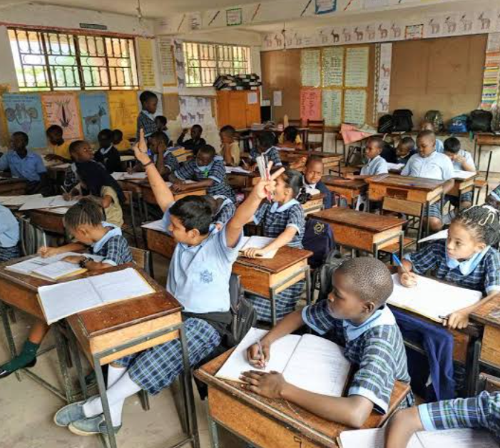

Grace Primary school has always been a centre of excellence as it always emerges among the best primary schools in the Eastern Region with many students being in first grade giving our learners an upper hand in qualifying for their first choices in secondary schools and also laying a foundation for them in future aspects of life.
The teaching and learning process has been successfully carried out throughout the term. The pupils have improved in all academic areas.The P.7 candidates who sat for PLE in 2025 successfully excelled with the best students having 5 aggregates,four students with six candidates and the rest following.
In preparation for major exams such as UNEB and end of term for other classes, teachers give learners frequent assessments such as begining of term, mid-term exams and home-work assignments in order to improve on the grades of learners.

For the lower primary classes and Nursery section, handwriting classes and reading classes are held daily so that the learners can be able to write neatly and speak fluent English
Our learners are involved in many games grouped in clubs such a football, netball,volleyball and swimming. For swimming classes, parents are always called upon to pay a reasonable amount for the swimming pool, since we always go to hotels such as Resort Hotel and Marple Cottages for swimming.
Recently, an adjustment was made and now we shall be getting our own swimming pool and as required, each student is requested to pay UGX 50,000/= towards the construction.
In addition to that, general assemblies are held every friday where each class gets to present different entertainment activities each week.
This helps to keep students busy because as the saying goes,"All work without play, makes Jack a dull boy." so we want our children to be active and healthy.